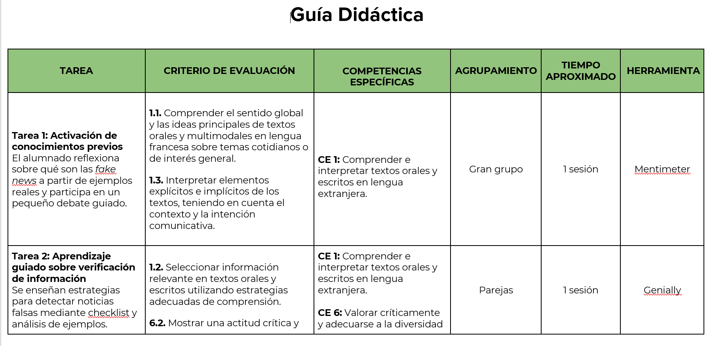
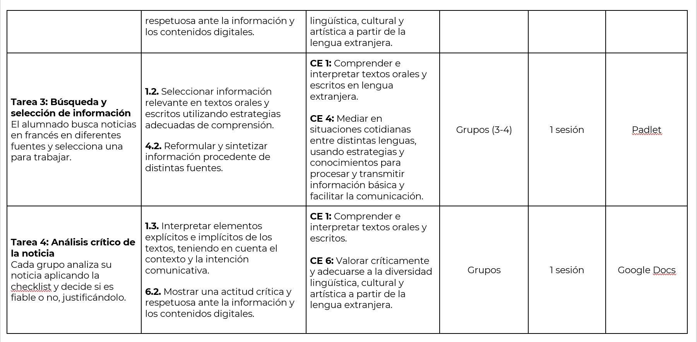
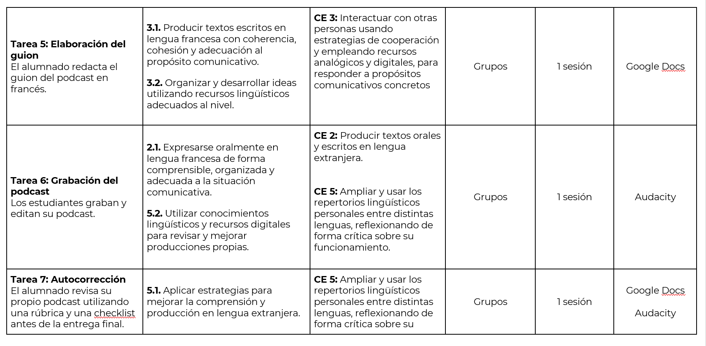
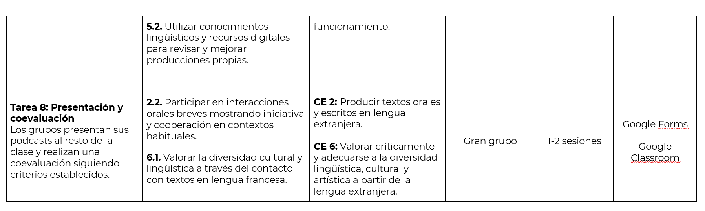

Elementos curriculares del proyecto.
A continuación presentamos la guía didáctica del proyecto "Info ou intox?", destinada al alumnado de 4º ESO para la asignatura de Francés Lengua Extranjera.




TIPS: Los posibles problemas técnicos que se puedan dar en la realización de este proyecto se abordarán mediante una planificación previa basada en la anticipación y la autonomía del alumnado. En primer lugar, se establecerán protocolos básicos de actuación, como comprobar la conexión a internet, reiniciar la herramienta o verificar los dispositivos antes de la sesión.
Además, se fomentará el aprendizaje entre iguales, de manera que el alumnado pueda ayudarse mutuamente en la resolución de dificultades técnicas, favoreciendo así la autonomía y la colaboración. También se proporcionarán tutoriales sencillos y accesibles sobre el uso de las herramientas digitales, lo que permitirá reducir la incertidumbre y facilitar el desarrollo de las tareas.
Por último, el docente adoptará un papel de guía, interviniendo cuando sea necesario y recogiendo información sobre las dificultades encontradas para mejorar futuras implementaciones. Asimismo, se contemplará cierta flexibilidad en los tiempos y en las herramientas, permitiendo adaptaciones en caso de incidencias técnicas, por ejemplo teniendo preparadas actividades complementarias (tutoriales de las herramientas propuestas en papel, lecturas sobre algún podcast interesante en francés, etc) en caso de no poder utilizar internet en alguna de las sesiones.